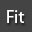

- 1. Introduction:
-
- AdvancedSkeleton is a collection of Maya tools for doing character setup.
-
- Main Features:
- Unlimited body configurations, 3 heads, 5 legs, 100 fingers, & anything goes.
- You can at any time go from AdvancedSkeleton, back to the FitSkeleton, make changes, and rebuild.
- SelectorDesigner, tool that lets you easily create custom `Selector` user interfaces.
- AnimationLibrary, tool for storing and retrieving poses and animation.
- FaceSetup allows quick setup of both realistic and cartoony faces.
2.
Installation:
Option
1: Run the setup.exe file
(*windows
only)
- Choose the Destination Folder
- NOTE: destination folder must be your Maya user directory
- e.g.: C:\Users\$user\Documents\maya\2011\
- Finish installation.
-
Option 2: Manually copy the files:
- The files are located in the Manual_Install folder
- Copy the files and folder to your Maya user directory, and make sure to preserve the icons/scripts/shelves folder structure.
- (Windows) C:\Documents and Settings\$user\My Documents\maya\2011\
- (Mac OS X) /Users/$user/Library/Preferences/Autodesk/maya/2011/
- (Linux) /home/$user/maya/2011/
-
-
- After installation, start Maya, and you will find a new Shelf called 'advancedSkeleton`
-
-
- 3. Overview:
-
- The key functionality of AdvancedSkeleton is to:
-
Generate a complex
motion system (AdvancedSkeleton) from a simple joint chain
(FitSkeleton)
-
Joints that are on
the `negative X` side of origin, gets read as the characters
right side,
and will mirror these to the left side. - The following information gets read from the FitSkeleton joints:
- names, positions, rotations, rotation axis, rotation orders.
- It also reads the following from the joints to determine the high level controls:
- labels and dependencyGraph input/output connections.
- The following joint labels will create high level controls:
-
FitSkeleton joint labels:
AdvancedSkeleton high level controls:
"Hand" & "Shoulder"
Arm IK
"Hip" & "Foot"
Leg IK
"LegAim"
3 bone (dog leg) IK
"Heel", "Ball" & "Toe"
FootRoll system
"BigToe" & "PinkyToe"
Foot rock-side-to-side system
"Root" & "Chest" (optional:"Mid")
Spine IK
"Eye"
Look at.. aim system
"0", "1", "2", etc..
Spline IK. (for tails, trunk, ponytails, etc.)
- FitTools also let you add the following attributes to the FitSkeleton:
- "TwistJoints" : will generate joints for distributing twist rotation along a bone.
- "Global" : will generate a control for maintaining world space orientation.
- "FreeOrient" : will preserve joints orientation, instead of auto orienting to X down.
- dependencyGraph input/output connections:
- AdvancedSkeleton will read any input/output connections from the FitSkeleton joints,
- and recreates the dependencyNodes on both left & right side on the AdvancedSkeleton.
- A example of this is on the yellow “Fingers” curve in the "biped" FitSkeleton template,
- This is a simple set-driven-keys setup, and it gets read by AdvancedSkeleton,
- and implemented in the full rig.
- You can create your own custom attributes to control any parts of the FitSkeleton.
- And it is not limited to setDrivenKey, but any nodes connected in any way.
-
- Symmetry:
- By default all joints and controls will be mirrored when building the AdvancedSkeleton.
- To identify joints on the FitSkeleton not to mirror, set the “.side” attribute of the joint to “None”.
- The “.side” attribute can be found in the attribute editor, under the “Joint labeling” section.
- 4. The Tools:
-
-  FitTools
- Browse through available FitSkeleton, and import any of them to the scene.
- You can add a your FitSkeleton to the list of available FitSkeletons, by saving it to the installDir/FitSkeletons/ folder.
- FitTools also has buttons for adding or removing FitSkeleton attributes and labels.
-
AdvancedSkeleton - Builds the AdvancedSkeleton from selected joint hierarchy.
- Select the top joint of the FitSkeleton before executing this.
-
Utilities - Utilities has following tools:
- Rebuild: The FitSkeleton is always kept with the AdvancedSkeleton, allowing for adjustments of joint placement at any time.
- To expose the original FitSkeleton, click "Toggle Fit/Advanced".
- This will display the FitSkeleton, which allows you to modify the original joint placement.
- Run "Rebuild Skeleton" after you made the modifications to the FitSkeleton.
- Any objects that have been parented to the skeleton, will be re-parented to the newly built skeleton.
- And by turning on the "Rebuild Connections" option, AdvancedSkeleton will also re-link hypergraph connections.
- The Rebuilding of Connections means that all anything added (e.g skinning) will be maintained in the newly built rig.
- Skinning: Go to Build Pose: applies all the values stored when the AdvancedSkeleton was first build.
- Select DeformJoints: selects the joints intended for binding (skinning).
- This can also be done by selecting all members of the "DeformSet"
- Hide / UnHide MotionSystem: Allows you to display ONLY the joints intended for binding.
- Useful when using `edit membership` or `paint weights` tools.
- SkinCage: Creates a polygon mesh from the AdvancedSkeleton.
- The SkinCage have automatically assigned smooth skinning (skinCluster), and the weighs from the SkinCage
- can be copied to your character with the “Copy skin to selected mesh” button.
- The SkinCage comes with construction `history loft curves`, for convenient controls to scale portions of the cage
-
to match your
character.
Once the SkinCage are fitted to your character, the `history loft curves` can be removed with the `Delete SkinCurves` button. - PolyBoxes: Create/Remove/Mirror Poly-Boxes to fit the character.
- These boxes can be used as low-res geometry representation of your character,
- or use the Boolean function to create a more accurate low-res representation.
- Character Set: 'CreateCharacter' :Brings together all the essential attributes of the skeleton and creates a `character set node`,
- for Maya's non-linear animation tools.
- Control Curves: Mirrors the shape of the control curves from left to right or vice versa
- After you created the AdvancedSkeleton, you might find that the control curves.
- are not ideally scaled/positioned for easy selecting.
- So you might have to sculpt the curves (by moving/scaling the cv`s) to fit better.
- This mirror tool allows you to do the adjustments on one side, then mirror it across.
- Partial Joints: creates childjoints in the deformationSystem that rotates partially to its parent,
- Skinning to these joints provides partial rotation effect without the loss of volume that occurs when blending weights.
- FitMode: Preserves X-down joint orientations, and maintains set driven keys.
- This allows you to move joints, without loosing it`s X down alignment.
- Also lets you rotate finger joints, and preserve the `curl` set driven keys.
- Display: Joint visibility:Switches the visibility of joints.
- It is recommended to hide the joints once the rig is complete, so animators do not accidentally select and manipulate these.
- Joint size: Set the joint display size.
-
Face - This is a step-by-step guide to setting up a face rig.
- The first steps are to identify key vertices and edgeloops on the face.
- After the face rig is built, there are steps for tuning of weights, and configuring setDrivenKeys.
-
- SelectorDesigner
- This tool is for creating `Selection Tools`.
- When you first open this, it will be blank.
- First step is to bring in an image of your character as the background (Edit->Background..)
-

- Next you need to create the buttons.
- To create a button:
- 1.Select the animation control object that you want the button to select when clicked. (e.g. "FKWrist_R")
- 2.Use the middle mouse button to `click and drag` the area you want the button.
- Finally make sure to save the newly created tool. (File->Save)
- Once saved, you can add a shelf button that will launch the tool (File->Put on shelf)
- See animated gif for how to use create buttons, and access the popup menus.
- These `Selection Tools` that are built by the `SelectorDesigner`, can be freely distributed to animators.
- AdvancedSkeleton is not required to run these.
- A example `Selector` called "biped" is provided, click the last button on the shelf to run it.
- This is what the "biped" selector looks like:
- Selector Tools comes with animation utilities menus.
-
- PoserDesigner
- This tool is for creating `Poser Tools`.
- When you first open this, it will be blank.
- Along the toolbar of the window are the following controls:
- By using these controls, you can build up your poser library:
- Finally make sure to save the newly created tool. (File->Save)
- And like SelectorDesigner, you can add a shelf button that will launch the tool (File->Put on shelf)
- `Poser Tools` built by `PoserDesigner` can also be distributed to animators, and does not require AdvancedSkeleton.
- Note that if you use the `only selected` option, then not only does the selected controls alone get stored,
- but it also looks for selected attributes in the channelBox.
- If you select 1 object and 1 attribute, and the attribute is of the `Limited Range` type attribute,
- then a slider will be generated to control the attribute (useful for blendShape attributes).
- The "anim" checkBox allows you to store animation clips instead of poses.
- Applying poses/animations:
- To apply pose/animation to your character simply click a button.
- To select or key the controls that are part of the pose/animation, right>click>.. a button.
- To apply pose/animation at the characters current position shift>click a button.
- To apply animation relative to current time shift>click a button.
- To apply animation relative to current values ctrl>click a button.
- Poser Tools comes with animation utilities menus.
- Help
- Open the help files in a browser.
-
-
 Selectors:biped
& face
Selectors:biped
& face
- These are samples of `Selectors`, built with the SelectorDesigner tool.
-
-
- 5. Animation Utilities:
-
- Tools created by SelectorDesigner comes with a standard set of menu items,
-
providing useful
utilities for the animator.
-
-Edit>Refresh: Rescan the scene, and update the character drop down menu.
>Filter: Set a filter for which rigs to appear in the drop down menu of the selector. - -Display>Controls: Toggles the visibility of AdvancedSkeleton controls.
- >Set Hotkey: Assigns the “Toggle of controls-visibility” to the ~ hotkey.
- This mean that the ~ key must be held down while selecting control.
- As soon as the ~ key is released the controls will be invisible again.
- Hold down the Ctrl key while pressing the ~ key will do a normal toggle of controls-visibility.
- >Joints: Toggle the visibility of joints, by switching the “Show>Joints” in all viewports.
- -Pose>Copy: Copy current pose. Ctrl/Alt>click will copy selected controls only.
- >Paste: Paste pose. Ctrl/ Alt>click keeps the All control in the same place.
- >Reset: Go to Build Pose
- >Mirror: Mirror Pose. Use optionBox to specify side, space & axis.
- -Anim>Copy: Copy animation. Ctrl>click will copy selected controls only.
- >Paste: Paste animation. Alt>click pastes "relative to current time"
- Ctrl>click pastes "relative to current time & values"
- -Dynamics>Add: Dynamics can by added to any FK control.
- >Bake: Bakes all Dynamics.
-
- 6. The Controls:
-
 FKIKControlCurves
FKIKControlCurves
- For every IK system there is a FKIKControlCurve.
-
These are the
controls that let you blend between FK / IK modes,
The attributes for these control curves are: - FKIKBlend: value 0 = FK and value 10 = IK.
- AutoVis: Automatically sets visibility from the FKIKBlend value.
-
FKVis: value
On = FK-Control-Curves visible
IKVis: value On = IK-Control-Curves visible - The FKVis / IKVis attributes are used for changing / animating the visibility of FK- / IK- Control-Curves.
- Useful for displaying only the ControlCurves needed for the mode you are working in.
-
FKCurves - The FKCurves are light-blue circles.
- The following attributes might be found on this type of control:
-
global: for
maintaining world space orientation.
IKCurves
The IKCurves are red boxes.
IKCurve can be translated and rotated (PoleVectorCurves can only be translated). - The following attributes might be found on this type of control:
- swivel: sets the orientation of the knee
- follow: for switching whether to inherit parent transform or not.
- roll: foot rolling from heel to toe.
- rollAngle: the number of degrees to `roll` each transform in the foot roll system
- stiff: sharpness of splineIk curvature.
- stretchy: for blending in/out IK stretching.
- antiPop: set amount of scale compensating to avoid IK popping.
- See animated gif for example of antiPop.
- IKCurves(foot-roll)
- Controls for manual rolling of heel and toe.
-
- AimCurves
- This controls the `Look At` aim system.
- Most used for eyes, were this control is the target that the eyes look at.
- The added attributes are:
- cross: Amount of cross eyed. Default is 1, where the eyes will be looking straight forward (empty stare)
- Set the value to 0, where the eyes will be converging to focus on the AimCurve control.
- follow: for switching whether to inherit parent transform or not.
- BendCurves
- These controls the `bending` of joint chains.
- To enable these controls to get built, make sure the fitSkeleton joint has twistJoints,
-
and that the “Bend”
attribute on the fitSkeleton joint is set to “On”.
- CenterCurve
- This controls the top of the AdvancedSkeleton FK hierarchy.
- The following attributes might be found on this type of control:
-
CenterBtwFeet:
Set whether the center of the character should automatically be
kept between the IK feet.
- MainCurve
-
This is the Main
control for the entire AdvancedSkeleton.
With sets the overall scale and placement for the character. - The following attributes might be found on this type of control:
- FkVis: Visibility off all FK controls.
- IkVis: Visibility off all FkIk switches (the blue crosses).
- AimVis: Visibility off all Aim controls (typically the eye look at control)
- EyeVis: Visibility for the FK Eye controls.
-
FingerVis:
Visibility for all the FK Finger controls (Fingers can still be
controlled with the curl attributes)
BendVis: Visibility for all the bend controls (the brown circles)
ArrowVis: Visibility for the arrows that indicates pole-vectors and look-at control directions.
JointVis: Visibility for the joints. - Extra
- All the animation controls have a "Extra" control.
- These are accessed by selecting a curve, then pick-walk up (up-arrow).
-
The `Extra-Controls`
can be useful for many situations,
such as avoiding gimbal lock, ot combining constraints with animation.
The shapes and colors of all the control curves can be changed, by modifying the file: "asCurveIcons.ma".
- The recommended work flow for rigging and animating characters is to have each character rig in their own files.
- Then use Maya`s referencing to bring the character(s) into the animation file.
- Make sure the “Use namespaces” option is on:
-
- By using NameSpaces, the AdvancedSkeleton animation tools recognises the characters in the scene:
-
-
- 8. Customising:
- There are several ways of customising AdvancedSkeleton to your specific needs.
- For custom `selection curves`, you can open the file "asCurveIcons.ma" which contains the icons,
- and make any changes, as long as the names remains unchanged.
- For modifications of the default values of AdvancedSkeleton, you can use the “run” attribute.
- This is a string attribute on the top node of the FitSkeleton. e.g. Root.run
- Any mel command entered here, will get called any time the AdvancedSkeleton gets built,
- As well as any time the function “Reset Pose” gets used by the animation tools.
- For example, if you would like a character to have its spine set to IK by default,
- then you could add the following to the run attribute: setAttr "FKIKSpine_M.FKIKBlend" 10;
-
-
- 9. Feedback:
- AdvancedSkeleton is constantly improving with input from the users.
- If you have any suggestions/comments about AdvancedSkeleton,
- please do not hesitate to contact us.
- support@animationstudios.com.au
-
- Copyright 2010 'Animation Studios'